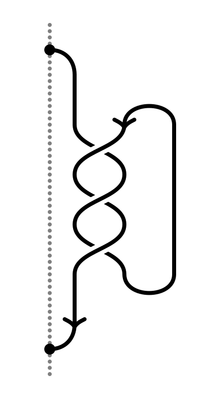

show all invariants|show all metadata
Input data and context

% s.l2.y1.y1.y1.u2
s.l2.y1.y1.y1.u2
,1
% Fixed orientations: s.l2.y1.y1.y1.u2,0
% Simplifies with options '-qs' to r1.r2.y3.r3.y4.y4.r5.x4.y3.y2.y2.y3.u4.y1.y2.x3.x4.u5.u0.x1.x1.x1.x1.x1.x1
Bar-Natan multicurve \(\mathrm{\widetilde{BN}}(T)\)
options -c2-qs
(diagram)
(metadata)
% file 'examples/words/w99fc49b79a/cxBNr-c2-qs', generated by kht++ 0.1 on Mon Nov 16 16:54:26 2026 UTC
1) h^6 q^12 δ^ 0 ⬮~~S~>⬯—>⬯~>⬯—>⬯~>⬮—>⬮<~⬯<—⬯<~⬯<—⬯<~⬮<—
2) h^0 q^ 1 δ^1/2 ⬯——D—>⬯~>⬯—>⬯~>⬯—>⬯~>⬯—>⬯~>⬮—>⬮<~⬯<—⬯<~⬯<—⬯<~⬮—>⬮<~⬯<—⬯<~⬯<—⬯<~⬮
Khovanov multicurve \(\mathrm{\widetilde{Kh}}(T)\)
options -c2-qs
(diagram)
(metadata)
% file 'examples/words/w99fc49b79a/cxKhr-c2-qs', generated by kht++ 0.1 on Mon Nov 16 16:54:26 2026 UTC
1) h^ 5 q^11 δ^1/2 ⬮~~S~>⬯—>⬯~>⬯—>⬯~>⬮—>⬮<~⬯<—⬯<~⬯<—⬯<~⬮<— s4(∞) q^16 δ_^0
2) h^ 6 q^13 δ^1/2 ⬮~~S~>⬯—>⬯~>⬯—>⬯~>⬮—>⬮<~⬯<—⬯<~⬯<—⬯<~⬮<— s4(∞) q^18 δ_^0
3) h^ 3 q^ 9 δ^3/2 ⬮~~S~>⬯—>⬯~>⬯—>⬯~>⬮—>⬮<~⬯<—⬯<~⬯<—⬯<~⬮<— s4(∞) q^14 δ_^1
4) h^-1 q^ 3 δ^5/2 ⬮~~S~>⬯—>⬯~>⬯—>⬯~>⬮—>⬮<~⬯<—⬯<~⬯<—⬯<~⬮<— s4(∞) q^8 δ_^2
5) h^-1 q^ 0 δ^ 1 ⬯~~S^2~>⬯—>⬯~>⬯—>⬯~>⬯—>⬯~>⬯—>⬯~>⬮<—⬮<~⬯<—⬯<~⬯<—⬯<~⬯<—⬯<~⬯<— r(8) q^80/9 δ|^1/2